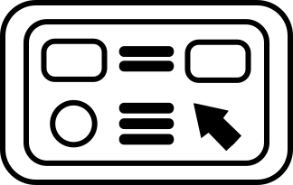

RASINGSTAR - Веб Редактор
Добавить
Очистить
Настройки
Скрыть панель
Результат
HTML
CSS
JS
Добавить код
Выберите, какой код вы хотите добавить:
Современная заготовка
Пустая разметка
Пустые файлы
Отмена
Настройки
Тема страницы:
Красная (по умолчанию)
Синяя
Зеленая
Темная
Светлая
Дизайн кнопок:
Объемный (по умолчанию)
Плоский
Размер шрифта для редактора:
12px
14px
16px (по умолчанию)
18px
20px
Закрыть
×
▶️
⬆️